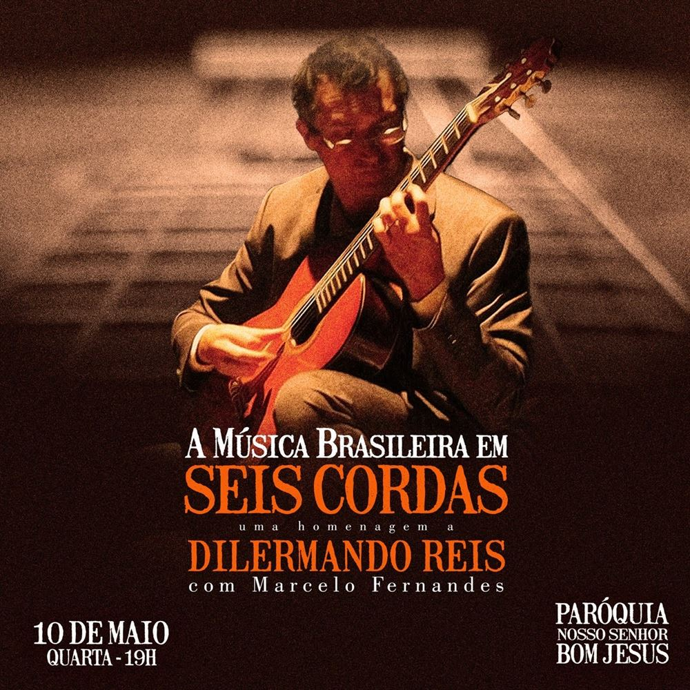
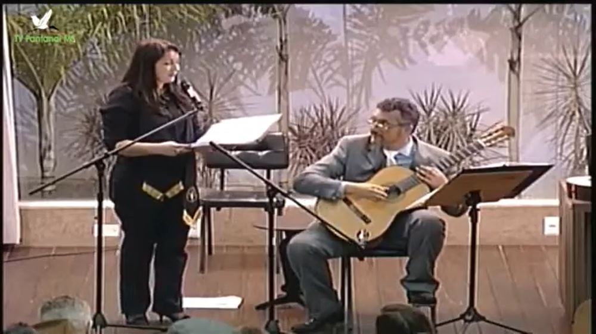
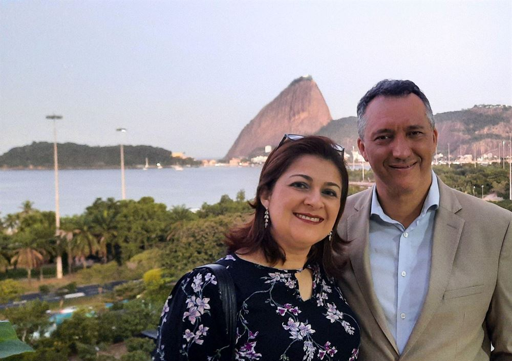
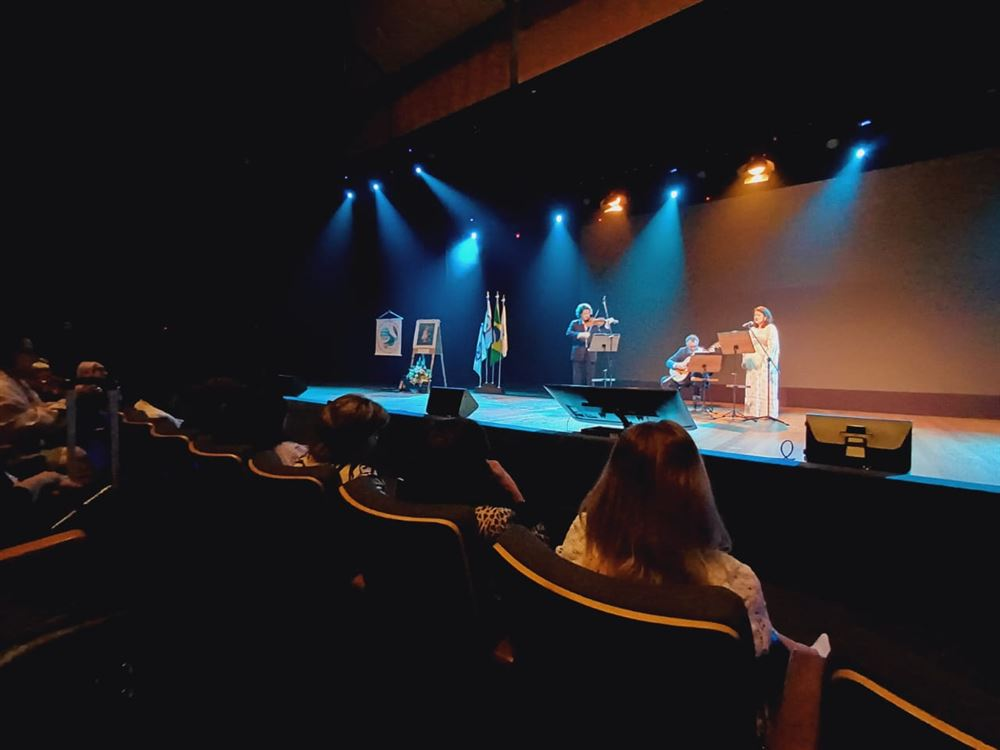
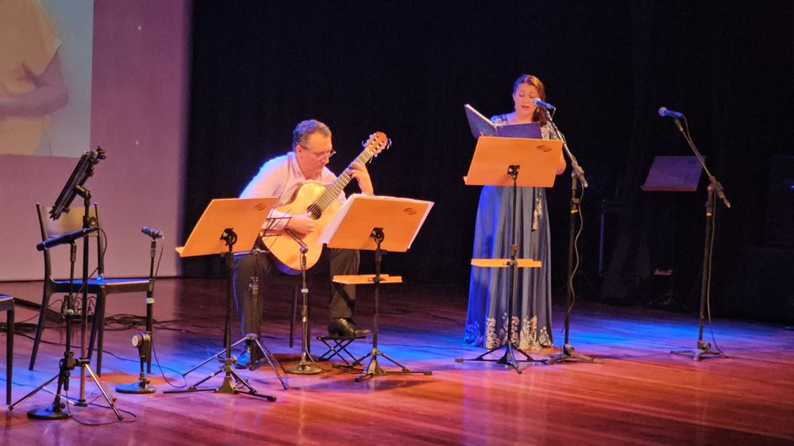
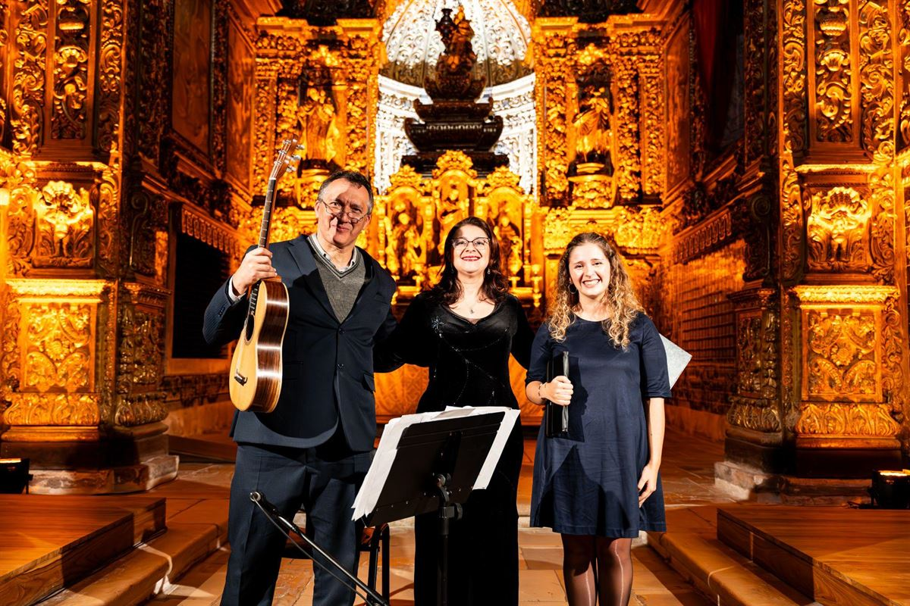
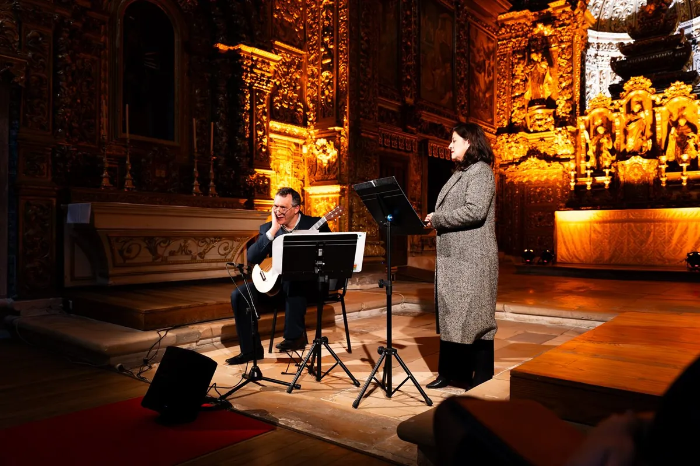

Duo Amábile
Soprano Ana Lúcia Gaborim and guitarist Marcelo Fernandes. Brazilian art song for voice and guitar, performed in Brazil and Europe since 2015.

The duo
Married since 1998, on stage together since 2015.
Duo Amábile performs Brazilian art song for voice and guitar, from nineteenth-century modinhas to works written for the duo. Much of the repertoire is by Marcelo Fernandes, who sets poems by Brazilian writers such as Carlos Nejar, Raquel Naveira and Rubênio Marcelo, and Ana Lúcia Gaborim gives the first performance.
The duo made its debut in 2015 in SESC’s Partituras series, in Corumbá. It has since performed in six countries, at venues including the Brazilian Academy of Letters, the Université Sorbonne Nouvelle, the University of Aveiro and the residence of the Brazilian Ambassador in Bern, and has toured sixteen towns in Mato Grosso do Sul.

Concerts
Selected concerts and projects since 2015.
-
2015
SESC Partituras, the first concert
SESC theatre · Corumbá, MS
Invited to the SESC Partituras project, they played Brazilian chamber music written or arranged for voice and guitar, published by SESC.
Concerts followed at the UFMS campuses in Chapadão do Sul, Coxim, Paranaíba, Ponta Porã and Três Lagoas. At the end of the year the duo closed FETEC at the Memorial da Cultura de MS.

SESC Partituras, the duo’s first concert. -
2016
First studio recording
Campo Grande and other towns in MS
The duo recorded “As árvores do meu lugar”, a poem by Eliane Guaraldo set by Marcelo Fernandes, for the CD “As canções que fizemos para ela: homenagem a Maria Betânia”, an independent release by teachers and composers from UFMS.
They also played at academic and cultural events that year, including the Chá Literário of the Academia Sul-mato-grossense de Letras at the Centro Cultural José Otávio Guizzo.

Chá Literário, Academia Sul-mato-grossense de Letras. -
2017
A música brasileira em seis cordas
Eight towns in MS
A tribute to the guitarist Dilermando Reis, funded by the state culture fund (FIC). From May to September the duo played in Bonito, Corguinho, Naviraí, Nova Andradina, Ponta Porã, Rochedo, São Gabriel do Oeste and Sidrolândia.
The final concert, at Teatro Glauce Rocha in Campo Grande, had guest artists Eduardo Martinelli, Luciana Fisher and Renato Oliveira. In October the duo was back at the same theatre for Movimento Concerto.

Project poster, funded by FIC/MS. -
2019
Canções poéticas e imagens modernistas
Around Campo Grande · FMIC
With a grant from the city culture fund (FMIC), the project produced a series of videos filmed at landmarks around Campo Grande, with violinist Heitor Lotti and soprano Andressa Chinzarian.
In June, “Fogo da Poesia” was premiered at the Academia Brasileira de Letras de Mato Grosso do Sul and broadcast on TV Pantanal.

A recital in 2019. -
20202021
Concerts with no audience
Teatro Glauce Rocha · live stream
During the pandemic the duo kept playing in the online edition of Movimento Concerto: concerts at Teatro Glauce Rocha with empty seats, streamed live by TV UFMS. Two of them are on the videos page.
-
2021
“Ode à Campo Grande” becomes a music video
Meu Mato Grosso do Sul · TV Morena
Marcelo’s setting of a poem by Rubênio Marcelo was chosen for the city’s anniversary. The duo recorded it in the studio and it was made into a music video.
Around this time Marcelo wrote a set of songs for the duo on poems by Delasnieve Daspet, Rubênio Marcelo and Carlos Nejar, performed at the Academia Sul-mato-grossense de Letras and at AFLAMS events. The duo also played live on “Tudo de Bom”, on SBT.
-
2022
Encontro com a Música Clássica
Teatro Glauce Rocha · August
The duo played at the festival run by the Campo Grande Municipal Symphony Orchestra.
Between April and July they had played at the Instituto Histórico e Geográfico de MS, recorded for TV Assembleia, paid tribute to the poet Raquel Naveira and played at the launch of the magazine “Estação Folclore” at SESC Cultura. At the end of the year the FIC fund backed a new project, “Cem anos de Semana de Arte Moderna em Terras Pantaneiras”.

Teatro Glauce Rocha, Campo Grande. -
2023
Brazilian Academy of Letters, Rio
ABL and PEN Clube do Brasil · Rio de Janeiro
The duo played at PEN Clube do Brasil for the founding of PEN Clube Centro-Oeste, and at the Academia Brasileira de Letras, where they premiered a piece by Marcelo Fernandes on a poem by Carlos Nejar.
In April they had opened the International Guitar Festival at Teatro Glauce Rocha.

Rio de Janeiro, 2023. -
2023
Cem anos de Semana de Arte Moderna em Terras Pantaneiras
Six towns in MS
The FIC-funded project took the duo to Aquidauana, Corumbá, Coxim, Dourados, Ponta Porã and Três Lagoas, in partnership with UEMS, IFMS and UFMS. Every concert was free.
The closing concert, on 11 October, celebrated the anniversary of the state of Mato Grosso do Sul at Bioparque Pantanal, to a full house.

Closing concert at Bioparque Pantanal, 11 October 2023. -
2023
Memorial da América Latina
São Paulo · September
The duo opened the 8th IFLAC World Brazil Peace Congress, with violinist Heitor Lotti as guest.
Also in 2023, the duo recorded two songs by Marcelo on poems by Raquel Naveira, “Guaicurus” and “O Andarilho das Américas”, for the CD “Cabeza de Vaca, Andarilho das Américas”, produced by Moacir Lacerda and launched at Teatro Glauce Rocha.
Listen to “Guaicurus” on Spotify Listen to “O Andarilho das Américas” on Spotify

Memorial da América Latina, São Paulo. -
2024
ALMAR project: fado
SESC Prosa · 8 October
A concert of Portuguese fado with the poets Rubênio Marcelo and Ana Maria Bernardelli and guest musicians: soprano Luciana Fisher, Luiz Sayd and Joel Mendes.

Launch of the ALMAR project book, SESC Prosa. -
2024
Aveiro, Festivais de Outono
Igreja das Carmelitas · Portugal · November
Invited by the University of Aveiro’s autumn festival. The programme had European and Brazilian songs, including pieces by Marcelo Fernandes.

Igreja das Carmelitas, Aveiro, Portugal. -
2024
Nepomuk, Svatojánské Muzeum
Czech Republic · November
A concert in the museum’s cultural programme, at the invitation of the Czech consulate, on the same trip that took the duo to Portugal.

Svatojánské Muzeum, Nepomuk, Czech Republic. -
2025
Bern and Paris
Switzerland and France · March and April
In Bern they played at the residence of the Brazilian Ambassador, for ambassadors from several countries. In Paris, at the Maison de l’Amérique Latine and the Université Sorbonne Nouvelle.
The programme had Marcelo’s songs on poems by Delasnieve Daspet, Raquel Naveira and Rubênio Marcelo, and works by the Brazilian composer Otto Pintiaski. On the same tour Marcelo gave a solo recital at the Winterthur Conservatory.

Residence of the Brazilian Ambassador, Bern, Switzerland. -
2025
Umbria: Todi and Deruta
Italy · July
Two concerts in Umbria: in Todi, at the festival Suoni dal legno, and at the Museo Regionale della Ceramica in Deruta.

“Suoni dal legno” festival, Todi, Italy. -
2025
Ceremonies and openings
Campo Grande, MS
The swearing-in of the OAB (Brazilian Bar Association) board at Teatro Rubens Gil de Camillo on 29 January; welcome week for UFMS music students at the Anfiteatro Luís Felipe de Oliveira in March; and the opening of COP 30 Pantanal Biome at the Insted auditorium on 30 September.
-
2026
Femina Vox and the city’s schools
Teatro Rubens Gil de Camilo · 16 March
The duo opened Femina Vox, an international event held in Campo Grande.
Between August and September, the project “Entre o rural e o urbano: as canções de Almir Sater e Chico Buarque” took the duo to municipal schools in rural areas and outlying neighbourhoods. The project was covered by the TV news programme “Bom Dia MS”.
Map
Six countries with the duo, and eight more where Marcelo Fernandes has played as a soloist.
Countries where the duo has performed Where Marcelo Fernandes has played as a soloist
Choose a point on the map.
Press
Articles from Brazilian and Portuguese media. Headlines are kept in the original Portuguese.
-
Festivais de Outono apresentam hoje o Duo Amábile
Diário de Aveiro · Portugal · Nov 2024The paper announces the concert at the Igreja das Carmelitas, part of the University of Aveiro’s autumn festival.
Read -

Duo Amábile pela Europa
O Estado · Artes&Lazer · Apr 2025A full page on the tour of Switzerland and France: Bern, the Maison de l’Amérique Latine, the Sorbonne Nouvelle, and how the duo’s songs are written.
Download the page -
Duo Amábile realiza concertos na Europa
Correio do Estado · Dec 2024Coverage of the trip to the Czech Republic and Portugal, with a programme of contemporary Brazilian song.
Read -
Recital na Academia Brasileira de Letras, no Rio
Violão Brasileiro · 2023The guitar website covers the recital at the Brazilian Academy of Letters and the premiere of Marcelo’s piece on a poem by Carlos Nejar.
Read -
Em noite histórica na ABL, Duo Amábile homenageia Delasnieve Daspet e Carlos Nejar
O Estado Online · 2023The trip to Rio de Janeiro for the recitals at the Brazilian Academy of Letters and PEN Clube do Brasil.
Read -
Semana de Arte Moderna recebe homenagem no Bioparque Pantanal
G1 Mato Grosso do Sul · Oct 2023The closing concert of “Cem anos de Semana de Arte Moderna em Terras Pantaneiras”, to a full house in Campo Grande.
Read -
Semana de Arte Moderna é homenageada no Mato Grosso do Sul
Fundação de Cultura de MS · 2023The FIC-funded project took free concerts to six towns, in partnership with UFMS, UEMS and IFMS.
Read
Press kit
Free to use for concert publicity. Please credit the official photo “Divulgação / Duo Amábile”.

Repertoire
The programme changes with the occasion. At its centre is Brazilian song, above all contemporary and regional song.
-
Early music
16th to 18th centuryEuropean pieces for voice and plucked instrument.
-
Classical and Romantic
19th centuryLieder and salon songs, arranged for voice and guitar.
-
Twentieth-century song
20th centuryWorks written or arranged for voice and guitar.
-
Contemporary Brazilian song
Today · the duo’s focusNew and regional work, much of it by Marcelo Fernandes on Brazilian poems, including songs in Nheengatu, an Indigenous language of the Amazon, first sung on the 2025 European tour.

Poets the duo has set to music
- Carlos Nejar
- Raquel Naveira
- Rubênio Marcelo
- Delasnieve Daspet
- Eliane Guaraldo
- Fernando D'Andreia
“By bringing into their repertoire new works inspired by Brazilian poetry, Duo Amábile built bridges between literature and melody, showing the world the richness of Brazilian culture in all its diversity.”
Poet, member of the Academia Sul-mato-grossense de Letras (translated from Portuguese)
Contact
The duo plays in theatres, churches, festivals, universities, literary academies and at cultural events. The programme is put together with the host and can include pieces written for the occasion.
- anaemarcelo440@gmail.com